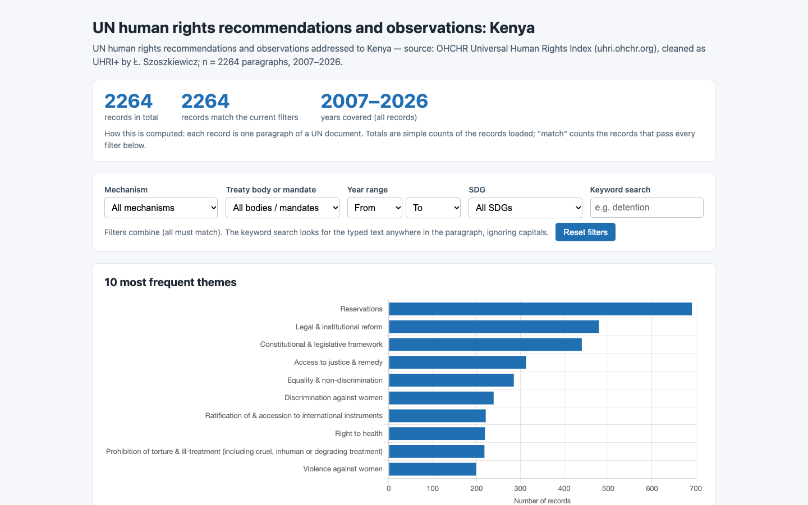
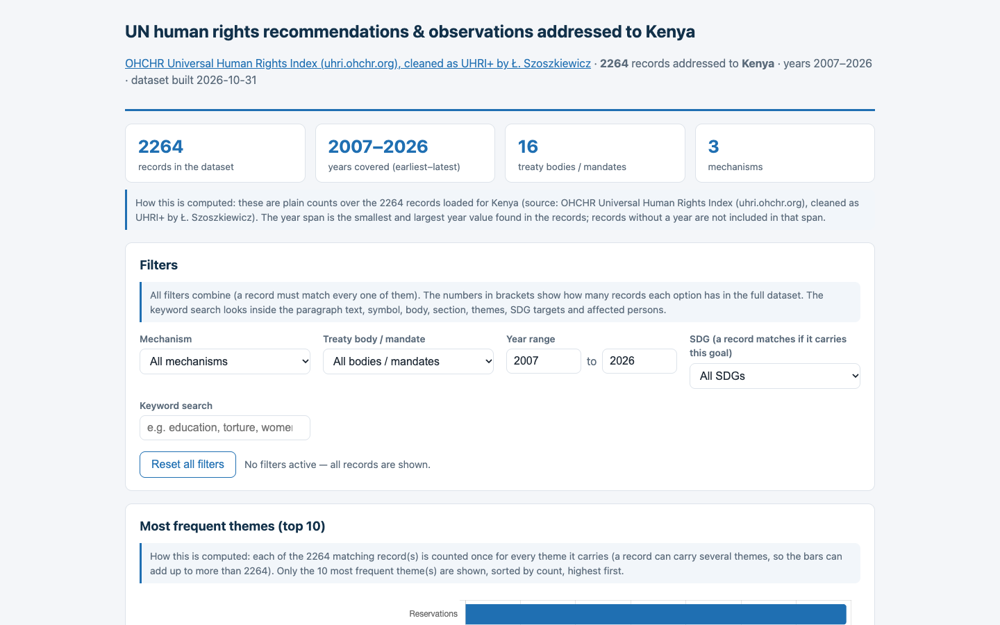
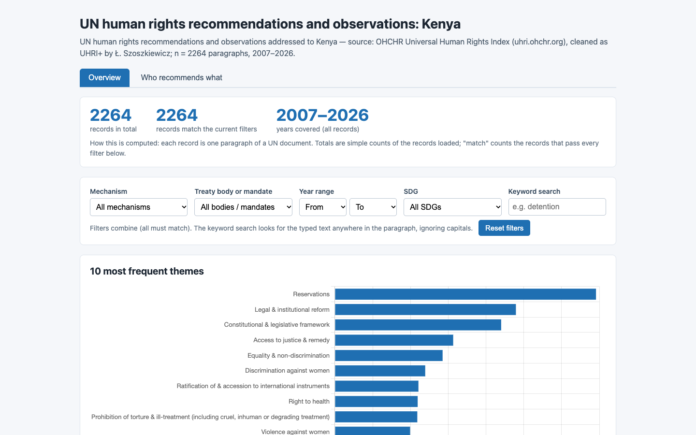
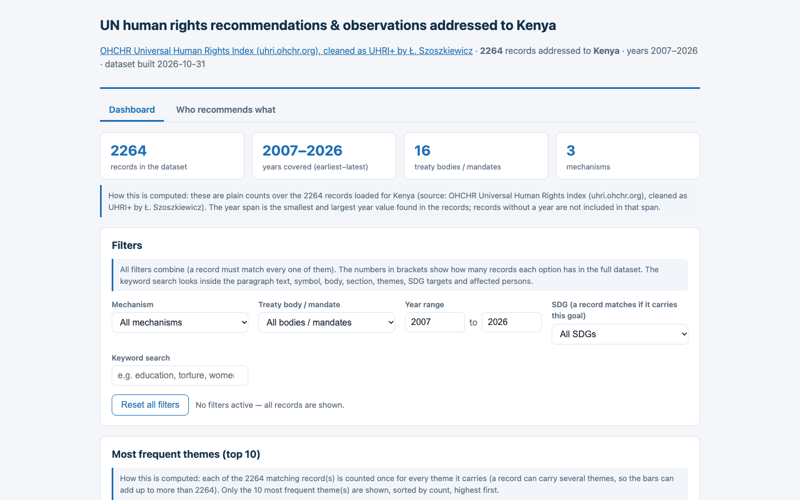
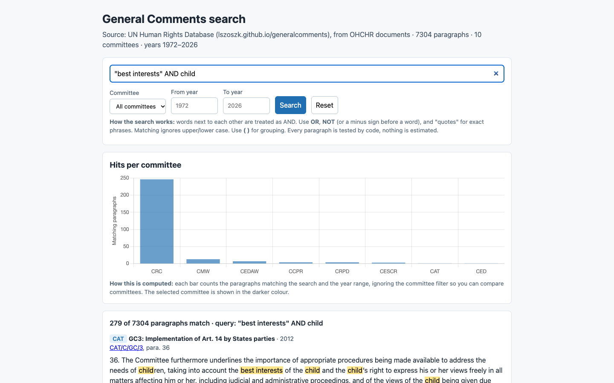
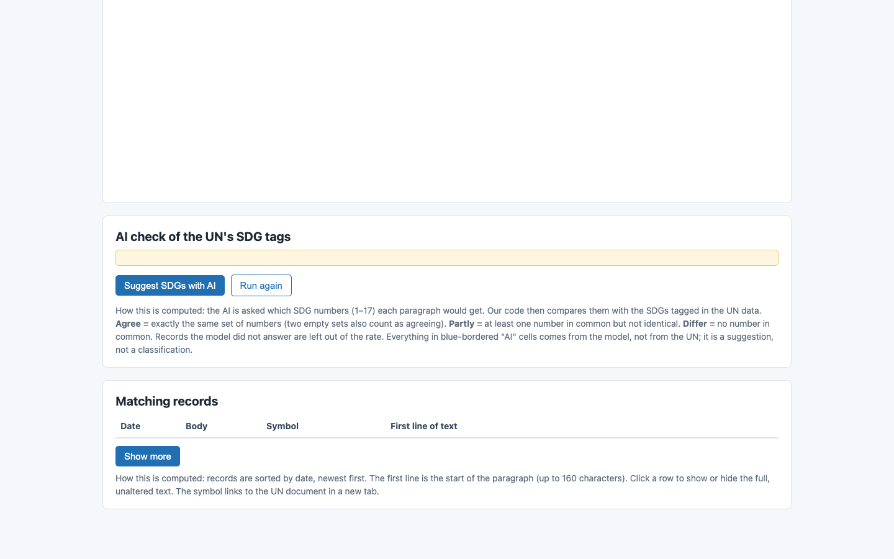

8/8 · 24.4 s · $0.057 · 164 lines
all checks passed

8/8 · 81.7 s · $0.035 · 488 lines
all checks passed

7/7 · 35.1 s · $0.095 · 270 lines
all checks passed

7/7 · 88.2 s · $0.041 · 733 lines
all checks passed

6/6 · 40.4 s · $0.101 · 252 lines
all checks passed

0/6 · 0.1 s · $0.000 · 0 lines
no_console_errors, no_network, uses_workshop_data, button_matches, source_matches, download

8/8 · 28.2 s · $0.064 · 170 lines
all checks passed

0/8 · 0.1 s · $0.000 · 0 lines
no_console_errors, no_network, uses_workshop_data, chart, search_box, button_matches, source_matches, text_contains_after_search

4/7 · 49.9 s · $0.116 · 210 lines
calls_studio_ask, batches_max, text_matches

0/7 · 0.2 s · $0.000 · 0 lines
no_console_errors, no_network, uses_workshop_data, calls_studio_ask, batches_max, text_matches, button_matches

0/6 · 0.5 s · $0.000 · 0 lines
no_console_errors, no_network, uses_workshop_data, chart, controls_min, table_min_rows

0/6 · 0.4 s · $0.000 · 0 lines
no_console_errors, no_network, uses_workshop_data, chart, controls_min, table_min_rows